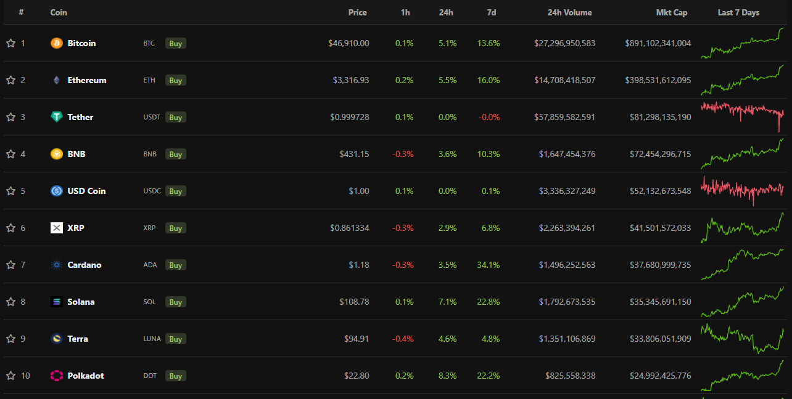

A kriptovalutákat a legtöbb ember az árfolyamnyereség reményében vásárolja meg. Általában ez
egy
rövid távú, akár csak pár napos, vagy pár hetes pozíció szokott lenni, de rengeteg valódi
befektetői
is van a piacon, akiknek a szemében - nem is teljesen véletlenül - a kriptoeszközök a
pénzügyek
forradalmát képviselik. Ők évekig tartják pozícióikat, vagy nincs is szándékuk arra, hogy
valaha
eladják ezeket. Vélhetően sokkal inkább őket célozzák meg azok az ajánlatokat, amelyek
feltűnően,
sőt: gyanúsan magas kamatlábakat hirdetnek meg az ismertebb coin-okra, ha náluk tartják
ezeket.
A
másik oldalon pedig kriptovaluta fedezet mellett hitelezési tevékenység is megjelenik. Az
adatok
alapján azonban felsejlik egy hosszú távon vélhetően nehezen fenntartható üzleti modell,
amely
alapvető partnerkockázatot jelenthet az ügyfelek számára.

Persze egyre többen vannak, akik hosszú távra tartják kriptovalutákat, de a spekulánsok jellemzően
viszonylag rövid távra veszik ezeket az eszközöket. Ám az ebbe a csoportba tartozó piaci szereplőket
egy tipikus fiat devizára fizetett 1% körüli betéti kamatláb aligha fogja lázba hozni, így talán nem
is csoda, hogy nem nagyon jöttek divatba akár a látra szóló kamatfizetések a kriptók világában.
Azonban évi 12%-os hozam egy olyan instrumentumra, amit egyébként is tart az ember és ami
egyébként
is rakétaként emelkedik az idő nagy részében, már sokan felkapják a fejüket.
Főleg akkor, ha (több jel szerint is cinikus módon) ezt kockázatmentesnek tüntetik fel.

A Nexo nevű vállalat pedig éppen ezzel a számmal hirdeti a szolgáltatását.
A cég egyfajta
kriptóvaluta hitelintézetként működik, hiszen nemcsak betétet szed be és fizet rá kamatot, de
hitelez is.
Azt gondolhatnánk, hogy ez a hagyományos üzleti modell alapján működik, vagyis a
kamatlábak révén egy a fix és egyéb változó költségeket fedező kamatmarzs van, amit összességében a
nettó kamatbevétel révén hoz nyereséget és fenntartható működést a vállalat számára. Például ha egy
- csak elméletben létező - bank minden egyes betétre éves 5%-os kamatot fizetne, és mindegyik hitelt
10% mellett helyezne ki, ráadásul a kettő értéke megegyezne 100 milliárd forintnál, akkor a nettó
kamatbevétel 5 milliárd forintra jönne ki. Értelemszerűen a tipikus kamatmarzsnak, ami jelen esetben
5%, érdemben pozitívnak kell lennie, hogy fenntartható legyen az üzleti modell. Természetesen azon
túl, hogy a gyakorlat sokkal összetettebb, egy banknak bőven van egyéb bevételi forrása is, de
még
így sem elképzelhető tartósan a negatív kamatmarzs.